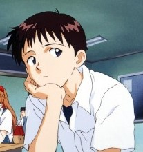
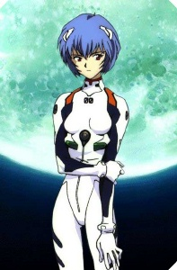
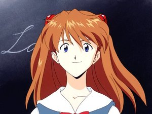
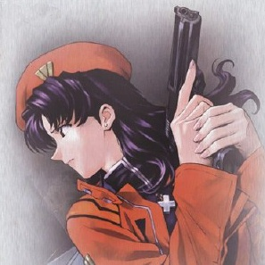

简介
《新世纪福音战士》（日语：新世紀エヴァンゲリオン；英语：Neon Genesis Evangelion，通常被称为EVANGELION、NGE或者EVA。在华语圈中被翻译为新世纪福音战士，中国大陆早期引进时译为新世纪天鹰战士）是一部由庵野秀明执导，GAINAX和龙之子制作公司制作的于1995年10月至1996年3月在东京电视台首播的日本原创电视动画连续剧。
故事情节
本剧设定在2000年9月13日，南极大陆上发生大爆炸，造成南极的冰川融化、地轴扭曲，随之而来的海平面上升、全球气候异常，加上后来引发的战争等因素，导致世界人口减半。
剧中的2015年，在被称为“第二次冲击”的全球大灾难过去十五年后，14岁的碇真嗣应其关系疏远的父亲碇源堂的要求来到了未来都市第3新东京市。其父正是特殊准军事组织NERV的司令。在抵达这个城市后，真嗣目击了作战部队对的不明物体“使徒”的作战。死海古卷曾预言过使徒这种巨型怪物的觉醒，而NERV的巨型人形生物兵器EVA是唯一能阻止使徒毁灭人类的武器。为了驾驶这种人形兵器，驾驶员必须在EVA内部与其进行神经系统的同步。NERV成员葛城美里护送真嗣进入NERV复杂的地下都市，在那里真嗣的父亲迫使他驾驶EVA初号机对阵使徒。没有受过训练的真嗣在战斗中很快就被打倒，进而使得初号机失控，并自行野蛮地消灭了使徒。经过住院治疗后，真嗣搬到美里住处并开始在第三新东京市的定居生活。在第二次战斗中真嗣在情绪激动下不顾命令摧毁了一个使徒，但之后被指责而产生负面情绪，并试图逃跑。最终真嗣面对美里并决定继续担任驾驶员。与此同时，此前在实验中受损的EVA零号机已被修复，而真嗣试图与其驾驶员——神秘而冷漠的14岁女孩绫波丽交流。美里制定的一项名叫“屋岛作战”的作战计划成功的击败了另一个使徒，但驾驶EVA零号机的绫波在战斗中受伤，而真嗣也险些丧命。
人物
| 角色 | 配音 |
| 碇真嗣（碇 シンジ） | 绪方惠美 |
| 渚薰（渚 カヲル） | 石田彰 |
| 绫波丽（綾波 レイ） | 林原惠美 |
| 惣流·明日香·兰格雷（惣流・アスカ・ラングレー） | 宫村优子 |
| 铃原冬二（鈴原 トウジ） | 关智一 |
| 碇源堂（碇 ゲンドウ） | 立木文彦 |
| 冬月耕造（冬月 コウゾウ） | 清川元梦 |
| 葛城美里（葛城 ミサト） | 三石琴乃 |
| 赤木律子（赤木 リツコ） | 山口由里子 |
| 加持良治（加持 リョウジ） | 山寺宏一 |
人物图片
碇真嗣
绫波丽
惣流·明日香·兰格雷
葛城美里
评价
《EVA》在日本国内和国际上获得了巨大的人气，并且超出了单纯的人气作品的范畴，发展成为日本的一种社会现象，被日本以及欧美的评论家誉为90年代具有里程碑意义的日本电视动画，动画业界和许多动漫欣赏者也将其视为日本最伟大的动画之一。上映后在动画界掀起了十数年未见的大浪，被普遍认为这是继《宇宙战舰大和号》和《机动战士高达》后的第三次日本动画革命。
奖项
- 分别在1996年和1997年赢得了动画神户奖
- 1997年荣获了日本SF大赏和日本文化厅媒体艺术节优秀奖
影响
《EVA》对日本的市场和传媒文化产生了重大的影响，被称在全球有超过2亿爱好者。继《铁臂阿童木》和《机动战士高达》之后缔造了第三次日本动画产业爆发，与《宇宙战舰大和号》和《机动战士高达》并称“日本动画史上的三次高潮”。